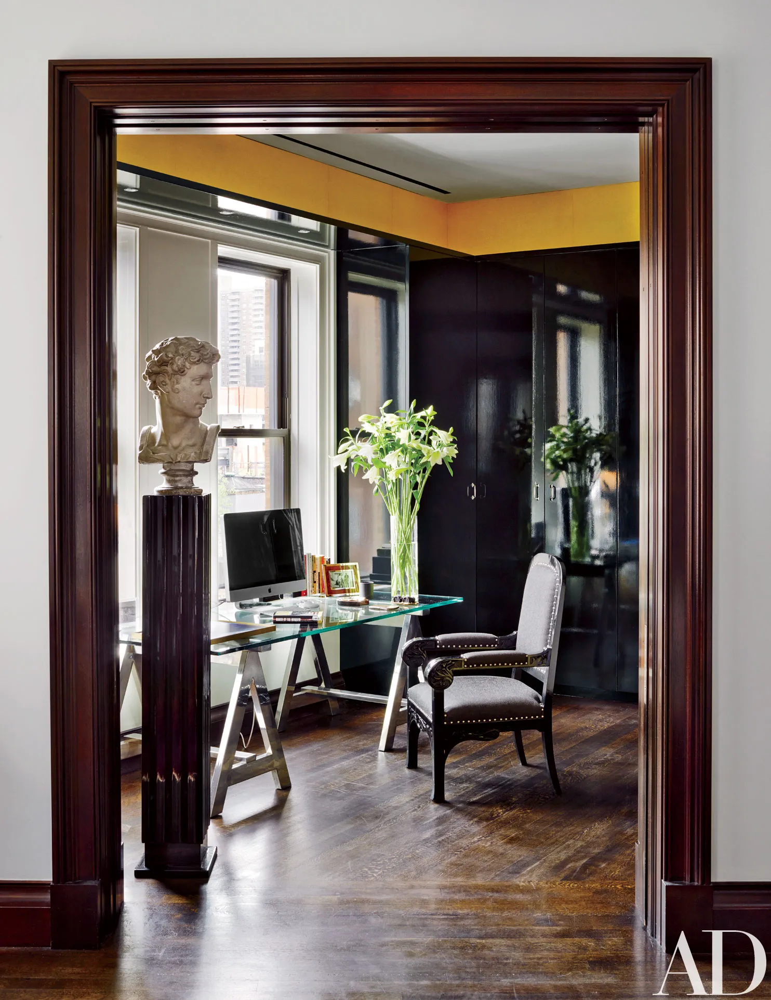

August 26, 2022: My First Week of Bootcamp
Q and A with Lindsay:
- Question 1: Was your first week what you expected?
My first week of bootcamp was so busy. We had a death in the family that kept me even more busy than usual, so I was very strapped for time. I wasn't suprised that there was a ton of work, since I took Intro to Coding at Awesome Inc. last year and expected there to be a lot.
- Question 2: What are you excited or eager to learn more about?
I am eager to learn more about the tools we are using, and more about Markdown.
- Question 3: What is something about you that an only be learned by reading this blog?
Thank you for reading my blog. As a reward, I will tell you something that no one else on the planet knows. I drank drip coffee this morning for the first time in 2 years. I'm at an AirBnB at the lake and forgot my french press. It was terrible.

September 4, 2022: Blog 2.0
Q and A with Lindsay:
- Question 1: What is something you wish you could do but currently do not have the coding skills to accomplish?
I wish I could do the Grasshopper assignments without hitting the help button EVERY. TIME.
- Question 2: What are you struggling with??
I am struggling with a few things, one of them being mental fatigue. I am building my endurace for learning so much every day. I am glad that we have this time in Onboarding to work on this.
- Question 3: How do you solve a problem?
I have been solving problems by searching for answers online. I am trying to use slack more.
- Question 4: What methods do you use to help yourself get unstuck?
If I get stuck on something I usually take a break and do something else for a few minutes. This helps me look at the problem from fresh eyes when I return.
Sidenote: I really need to get an office space set up in my house. Here's one from a website I found that I really love!
